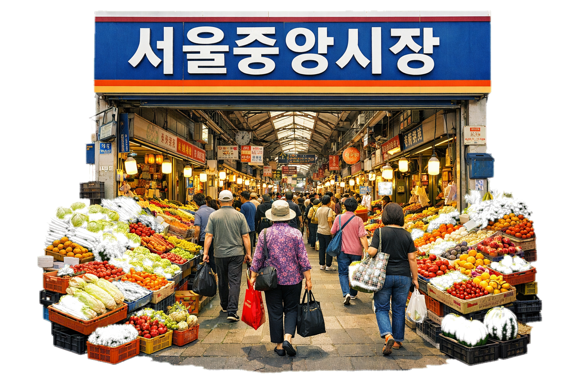

서울중앙시장 완전 정복 가이드:
중구 골목의 맛과 즐길 거리
중구 신당동 서울중앙시장의 양곡·반찬·곱창 골목, 신당동 떡볶이 타운 연계 코스, 최근 뜨는 '힙당동' 카페 거리 팁을 안내합니다.

1. 남대문·동대문과 어깨를 나란히 했던 서울 3대 시장의 뿌리
해방 직후부터 남대문시장, 동대문시장과 함께 서울의 3대 시장으로 불렸던 '서울중앙시장'은 지금도 중구 신당동 한가운데서 묵직한 역사를 이어가고 있습니다. 과거 전국의 쌀과 곡식이 이곳 창고에 모여 서울 전역으로 퍼져나갔기에, 지금도 시장 곳곳에는 오래된 양곡상과 방앗간, 정성껏 무쳐내는 반찬과 젓갈 가게가 즐비합니다.
여기에 더해 최근 몇 년 사이, 낡은 쌀창고와 철공소, 간판 없는 점포들을 개성 있게 리모델링한 이른바 '힙당동' 카페와 음식점들이 시장 골목 사이사이에 스며들면서 중장년층 단골과 2030 세대가 자연스럽게 어우러지는 독보적인 분위기를 만들어내고 있습니다.
2. 매콤한 알곱창부터 수제 보리밥까지, 골목 미식의 매력
서울중앙시장 아케이드 안으로 들어가면 구수한 된장 냄새와 매콤한 불향이 어우러집니다. 1인분에 넉넉한 인심이 담긴 5,000원~7,000원대 보리밥·칼국수 노포는 가성비를 따지는 단골들의 아지트이며, 저녁이 되면 불판 위에서 볶아내는 돼지곱창과 야채곱창, 막창 골목으로 발길이 이어집니다.
길 건너편에 자리한 원조 '신당동 떡볶이 타운'과도 도보 5분 거리여서, 낮에는 중앙시장 구경과 장보기를 하고 저녁에는 즉석 떡볶이까지 한 번에 묶어 여행하기에 더없이 좋습니다.
3. 낮의 시장과 밤의 '힙당동'을 모두 만나는 법
오후 3시경 방문해 시장 내부의 전통 방앗간과 반찬 가게, 주방용품 거리를 천천히 구경한 뒤, 해가 질 무렵 시장 중앙 골목과 신당역 인근 골목의 감성 카페나 노포에서 저녁을 보내는 코스를 추천합니다. 2호선과 6호선이 환승되는 신당역 바로 앞이라 서울 어느 곳에서도 찾아오기 쉽습니다.
한눈에 보는 방문 핵심 정보
| 위치 · 지하철 | 서울 중구 퇴계로85길 36 · 2·6호선 신당역 1·2번 출구 도보 2분 |
|---|---|
| 영업시간 | 일반 상점 08:00 ~ 20:00 / 곱창·포차·힙당동 술집 16:00 ~ 24:00 |
| 정기 휴무 | 일요일 일부 도소매 점포 휴무 (먹거리 및 주말 야간 영업 점포 다수) |
| 대표 먹거리 | 돼지곱창·알곱창, 칼국수·보리밥, 즉석 호떡·전, 인근 신당동 즉석 떡볶이 |
| 특화 포인트 | 전통 양곡(쌀) 도매 거리, 수제 반찬·젓갈, '힙당동' 개성 있는 카페·와인바 |
신당역 서울중앙시장 & 힙당동 코스
- 오후 3시 · 신당역 2번 출구 진입: 중앙시장 아케이드 내부를 걸으며 오래된 쌀 가게, 젓갈집, 가구·주방 거리를 둘러봅니다.
- 오후 4시 30분 · 힙당동 골목 카페 휴식: 옛 쌀창고를 개조한 개성 있는 카페에서 커피와 디저트를 즐깁니다.
- 오후 6시 · 알곱창 골목 또는 신당동 즉석떡볶이: 시장 먹거리 골목에서 불향 가득한 곱창을 맛보거나 도보 5분 거리 떡볶이 타운에서 저녁을 먹습니다.
자주 묻는 질문 (FAQ)
Q. 서울중앙시장은 신당동 떡볶이 골목과 같은 곳인가요?
도로를 사이에 두고 마주 보고 있는 인접 구역입니다. 신당역 1·2번 출구 쪽이 서울중앙시장, 7·8번 출구 방면이 신당동 떡볶이 타운으로 도보 3~5분이면 오갈 수 있습니다.
Q. 평일 저녁에도 식당들이 문을 여나요?
네, 시장 내 반찬·생활 상점은 저녁 7~8시경 닫지만 먹거리 골목과 곱창집, 힙당동 식당들은 밤 10~11시 이후까지 활기차게 영업합니다.